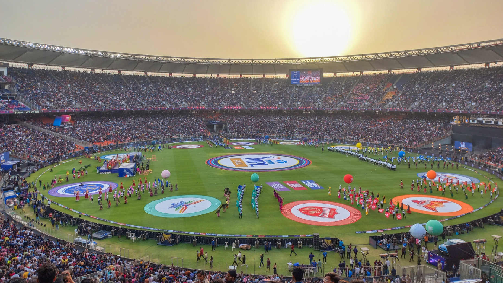

La Indian Premier League (IPL) es una de las ligas de cricket más prestigiosas y lucrativas del mundo. Fundada en 2008, la IPL se juega en formato Twenty20 (T20) y es administrada por el Consejo de Control de Cricket en India (BCCI). La liga cuenta con ocho equipos franquiciados representando diferentes ciudades y estados de India. La temporada regular de la IPL se lleva a cabo anualmente durante aproximadamente dos meses, generalmente entre marzo y mayo.
La IPL ha atraído a algunos de los mejores jugadores de cricket de todo el mundo, convirtiéndose en un escaparate para el talento internacional. Es conocida por su alto nivel de competencia, grandes multitudes en los estadios y una cobertura mediática masiva tanto en India como en todo el mundo. Además de los partidos regulares de temporada, la IPL culmina en un emocionante torneo eliminatorio que incluye playoffs y una gran final.
